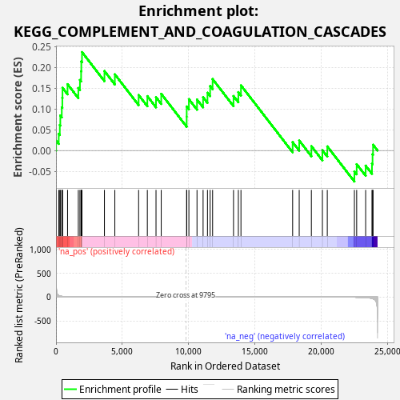
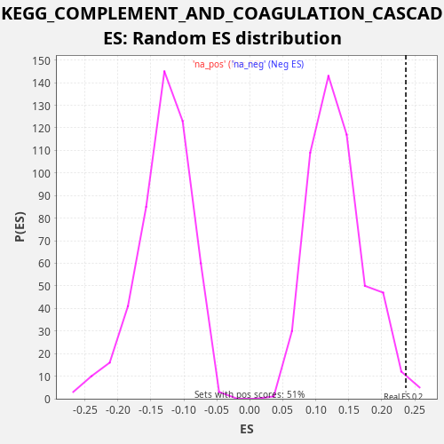

| Dataset | LabCL |
| Phenotype | NoPhenotypeAvailable |
| Upregulated in class | na_pos |
| GeneSet | KEGG_COMPLEMENT_AND_COAGULATION_CASCADES |
| Enrichment Score (ES) | 0.23658727 |
| Normalized Enrichment Score (NES) | 1.779296 |
| Nominal p-value | 0.017509727 |
| FDR q-value | 0.09899639 |
| FWER p-Value | 0.782 |

| SYMBOL | RANK IN GENE LIST | RANK METRIC SCORE | RUNNING ES | CORE ENRICHMENT | |
|---|---|---|---|---|---|
| 1 | C1S | 8 | 455.041 | 0.0241 | Yes |
| 2 | C4BPB | 206 | 30.004 | 0.0403 | Yes |
| 3 | C1R | 287 | 22.870 | 0.0614 | Yes |
| 4 | CFB | 325 | 19.967 | 0.0843 | Yes |
| 5 | F8 | 436 | 14.192 | 0.1041 | Yes |
| 6 | PROS1 | 478 | 12.825 | 0.1268 | Yes |
| 7 | C4B | 490 | 12.456 | 0.1507 | Yes |
| 8 | CFD | 871 | 5.544 | 0.1594 | Yes |
| 9 | CD55 | 1683 | 1.714 | 0.1503 | Yes |
| 10 | C5AR1 | 1806 | 1.493 | 0.1697 | Yes |
| 11 | C5 | 1893 | 1.362 | 0.1905 | Yes |
| 12 | C2 | 1908 | 1.338 | 0.2143 | Yes |
| 13 | BDKRB2 | 1960 | 1.267 | 0.2366 | Yes |
| 14 | SERPINE1 | 3653 | 0.300 | 0.1911 | No |
| 15 | C8G | 4436 | 0.170 | 0.1831 | No |
| 16 | TFPI | 6229 | 0.045 | 0.1335 | No |
| 17 | CFI | 6887 | 0.025 | 0.1307 | No |
| 18 | VWF | 7541 | 0.013 | 0.1282 | No |
| 19 | CD46 | 7935 | 0.008 | 0.1363 | No |
| 20 | C3AR1 | 9853 | 0.000 | 0.0815 | No |
| 21 | C9 | 9855 | 0.000 | 0.1058 | No |
| 22 | MASP2 | 10020 | 0.000 | 0.1235 | No |
| 23 | PLAT | 10632 | -0.000 | 0.1226 | No |
| 24 | SERPIND1 | 11091 | -0.001 | 0.1281 | No |
| 25 | C4A | 11421 | -0.003 | 0.1389 | No |
| 26 | CFH | 11621 | -0.004 | 0.1550 | No |
| 27 | F3 | 11808 | -0.005 | 0.1717 | No |
| 28 | CR2 | 13385 | -0.023 | 0.1310 | No |
| 29 | SERPINF2 | 13749 | -0.029 | 0.1404 | No |
| 30 | C3 | 13946 | -0.034 | 0.1567 | No |
| 31 | PROC | 17843 | -0.247 | 0.0201 | No |
| 32 | SERPING1 | 18339 | -0.310 | 0.0241 | No |
| 33 | BDKRB1 | 19255 | -0.473 | 0.0106 | No |
| 34 | F2R | 20087 | -0.690 | 0.0007 | No |
| 35 | C6 | 20455 | -0.838 | 0.0099 | No |
| 36 | PLAUR | 22499 | -3.469 | -0.0501 | No |
| 37 | CD59 | 22671 | -4.140 | -0.0328 | No |
| 38 | THBD | 23348 | -10.657 | -0.0363 | No |
| 39 | F12 | 23825 | -28.176 | -0.0316 | No |
| 40 | PLAU | 23868 | -32.014 | -0.0089 | No |
| 41 | SERPINA1 | 23906 | -35.915 | 0.0139 | No |

{kind=link}
{kind=link}